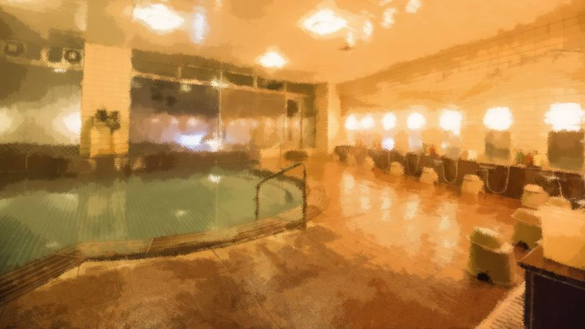
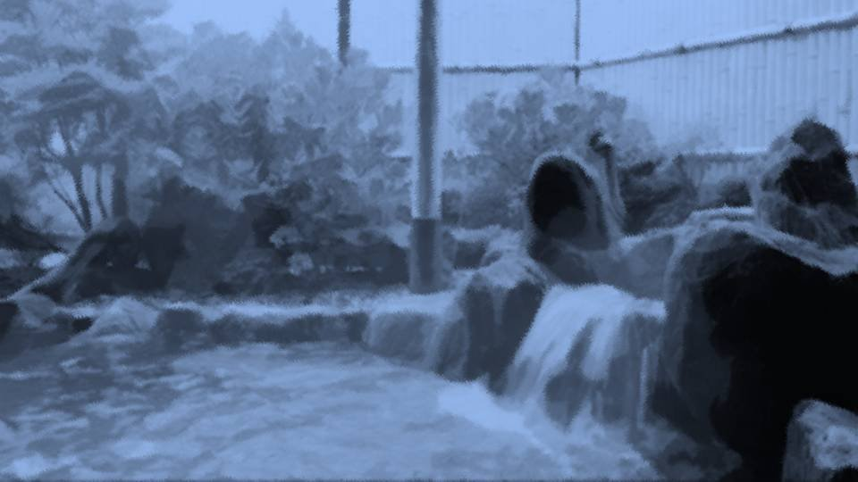

消えゆく星

――時刻は21時を回った。
お父さんは酔っぱらってしまい、せっかくの温泉にも入らず眠ってしまった。
お母さんと春花は、春花のお母さんの昔話で盛り上がっている。
せっかく春花とお母さんが新しい形で打ち解けられる機会だし、私は1人で大浴場へ向かうことにした。
お父さんは酔っぱらってしまい、せっかくの温泉にも入らず眠ってしまった。
お母さんと春花は、春花のお母さんの昔話で盛り上がっている。
せっかく春花とお母さんが新しい形で打ち解けられる機会だし、私は1人で大浴場へ向かうことにした。

大浴場には誰もいない。
高級旅館の大浴場を独り占めできるなんて、めったにあることではない。
一瞬春花を呼ぼうかと思ったけど、今は春花も大事な時。
高級旅館の大浴場を独り占めできるなんて、めったにあることではない。
一瞬春花を呼ぼうかと思ったけど、今は春花も大事な時。
思い切って広い湯船で泳いでみた。
1人の空間で何も気にせず思いきり泳ぐのは、何ともいい気分だ。
「はあ……」
ひとしきり泳いだ後、大きな看板があるのに気づく。
1人の空間で何も気にせず思いきり泳ぐのは、何ともいい気分だ。
「はあ……」
ひとしきり泳いだ後、大きな看板があるのに気づく。
露天風呂――。
なるほど、露天風呂、か。
ここへ来て行かないなんて、この旅館に失礼だ！
春花のお母さんに失礼だ！
露天風呂に失礼だ！
私はいそいそと露天風呂の入り口へ向かった。
なるほど、露天風呂、か。
ここへ来て行かないなんて、この旅館に失礼だ！
春花のお母さんに失礼だ！
露天風呂に失礼だ！
私はいそいそと露天風呂の入り口へ向かった。

海の音が聞こえ、明かりも少ない。

満天の星に、少し太った半月。
最高のロケーションだ。
ここにも誰もいない。
泳げるほど広くないが、のんびり浸かるのにちょうどいい。
最高のロケーションだ。
ここにも誰もいない。
泳げるほど広くないが、のんびり浸かるのにちょうどいい。
まずは一糸まとわぬ姿で大の字になり、海から吹き込む風を全身で受け止める。
火照った身体がスッキリと冷やされていく。
この滑稽な姿も、誰も見ていない今だからこそできる業。
その滑稽な姿に満足すると、今度は跳躍と同時に膝を抱え、アルマジロのように湯船に飛び込む。
火照った身体がスッキリと冷やされていく。
この滑稽な姿も、誰も見ていない今だからこそできる業。
その滑稽な姿に満足すると、今度は跳躍と同時に膝を抱え、アルマジロのように湯船に飛び込む。
「はあ……」
湯船に入ると、もう一度ため息をついた。
顔に当たる海風がほんの少し冷たいが、それがまたいい。
再び大の字になって湯に浮かび、真上の空に目を向ける。
湯船に入ると、もう一度ため息をついた。
顔に当たる海風がほんの少し冷たいが、それがまたいい。
再び大の字になって湯に浮かび、真上の空に目を向ける。
このような空を見るのは、荒田以来かな。
あの時はまだ桜が咲いていて、月と星、そして桜吹雪が黒い空を彩っていた。
あの時はまだ桜が咲いていて、月と星、そして桜吹雪が黒い空を彩っていた。
五島やエリカちゃんと夏菜ちゃん、城崎さんも同じ星空を見ているだろうか。
みんなは元気にしているだろうか。
事件のその後はどうなったのだろうか。
みんなは元気にしているだろうか。
事件のその後はどうなったのだろうか。
と、
誰かが入ってきたようだ。
50歳くらいの恰幅のいいおばさんだ。
私はすぐに大の字をやめ、アゴから下を湯に沈める。
50歳くらいの恰幅のいいおばさんだ。
私はすぐに大の字をやめ、アゴから下を湯に沈める。
「よいしょー！」
そのおばさんは掛け声を上げながら、1度ざぶんと頭まで浸かると、ゆっくりと浮上してきた。
水面に大きな波が立ち、私の目まで湯が押し寄せる。
そのおばさんは掛け声を上げながら、1度ざぶんと頭まで浸かると、ゆっくりと浮上してきた。
水面に大きな波が立ち、私の目まで湯が押し寄せる。
「はあ、やっぱりここはいつ来てもいいねえ！」
おばさんから、少しお酒のにおいがする。
おばさんから、少しお酒のにおいがする。
「お嬢ちゃんは、誰と来たの？」
おばさんはニコニコと話しかけてきた。
おばさんはニコニコと話しかけてきた。
「家族とです。お父さんは酔っぱらって寝ちゃって……。
お母さんと、えっと、お姉ちゃんはおしゃべりしてます」
「そうかいそうかい。ここはいつ来てもいいもんだねえ」
おばさんは再度この温泉を褒め称えた。
「そうかいそうかい。ここはいつ来てもいいもんだねえ」
おばさんは再度この温泉を褒め称えた。
「おばさんは誰と来たんですか？」
「私は1人だよ。毎年ゴールデンウィークになったら、ここに来るんだ。 独り身だし、気楽なもんさ」
毎年こんな旅館に泊まるなんて、春花のお母さんみたく女社長でもやっているのだろうか。
「私は1人だよ。毎年ゴールデンウィークになったら、ここに来るんだ。 独り身だし、気楽なもんさ」
毎年こんな旅館に泊まるなんて、春花のお母さんみたく女社長でもやっているのだろうか。
「ん……？」
おばさんは私の肩に目を向けた。
肩から胸にかけて、傷がまだ残っている。
これもそのうちに目立たなくなるらしいが。
おばさんは私の肩に目を向けた。
肩から胸にかけて、傷がまだ残っている。
これもそのうちに目立たなくなるらしいが。
「どれ、お嬢ちゃんを診てあげようかね」
「見る……？」
おばさんは私に正面を向けた。
「見る……？」
おばさんは私に正面を向けた。
「私、これでも占いで食ってるんだ。
よく当たるって評判だよ」
占い師か……。
それだけで生活できるなんて、いや、ここに毎年来られるなんて相当人気があるのだろう。
占い師か……。
それだけで生活できるなんて、いや、ここに毎年来られるなんて相当人気があるのだろう。
おばさんはじっと私の顔を観察した。
特に何か質問するわけでもなく、手相を見るわけでもなく、ただ、じっと顔を。
特に何か質問するわけでもなく、手相を見るわけでもなく、ただ、じっと顔を。
「お嬢ちゃん、なかなかの幸運の持ち主だね。
周りの人に恵まれて、今まで何不自由なく幸せな暮らしをしていた。
家族も友達も、みんなお嬢ちゃんのことが大好きだね」
「あ……はい。 えへ、そうですね」
そう言われると素直に嬉しい気持ちになる。
「あ……はい。 えへ、そうですね」
そう言われると素直に嬉しい気持ちになる。
「でも、それは数ある人生の分岐点から奇跡的に得られた幸せ。
色んな人に支えられ、そして自分も色んな人を支えて。
これは奇跡と言うより、自分たちで勝ち取った幸せ、とでも言うのかね」
10年前や荒田でのことを言っているのだろうか。
そうだとすればかなり当たっている。
今の私があるのはみんなのおかげ。
もし何か1つ間違えていれば……。
10年前や荒田でのことを言っているのだろうか。
そうだとすればかなり当たっている。
今の私があるのはみんなのおかげ。
もし何か1つ間違えていれば……。
「ああごめんごめん、今までのことを言っても仕方ないね。やっぱり未来のことを言わないと。
そうねえ……お嬢ちゃんの将来は……。
あ、聞きたい？ こういうの聞くの嫌がる人もいるからね」
「お願いします。聞いてみたいです」
「お願いします。聞いてみたいです」
「ん……。
その前に、ちょっと私の仕事の話をしようかね」
じっと私の顔を見ていたおばさんが、ゆっくりと視線を空に向けた。
じっと私の顔を見ていたおばさんが、ゆっくりと視線を空に向けた。
「人はね……いずれ皆死ぬんだよ。
私のところには、死に直面した人が相談しに来ることもある。
病気になってしまったけど、どうすれば助かるのか。
破産しそうで、自殺するしかないけどどうすればいいのか。
はっきり言って、占いで助けることなんてできやしないんだよ」
「もっと早く私のところに来ていたら、助かる見込みもあったかもしれないけど……。
そういう人たちはみんな、手遅れになってから来るのさ」
占い師の元を訪れるのは興味本位の人だけでなく、本当に助かりたい人もやってくる。
だから、こういった人生の危機に瀕している人たちを、このおばさんはたくさん見てきている、ということか。
占い師の元を訪れるのは興味本位の人だけでなく、本当に助かりたい人もやってくる。
だから、こういった人生の危機に瀕している人たちを、このおばさんはたくさん見てきている、ということか。
「だからね、私はそういう人たちにはこう言うんだよ。
人はいずれ死ぬ。
人間と言うのは、神様から全員死刑を宣告されているんだ。
ただ、神様はね、どんな最期を迎えるかだけは選ばせてくれる。
それに対して、どうやって向き合うか。
ここまで来ると、占いというより、人生相談だね」
「『悪くない人生だった。そう思えるよう、今できることを精一杯やってください』。
私から言えるのは、本当にそれだけ。
それで救われる人は、そんなに多いとも思えないけどね。
占いでアドバイスはできても、人生そのものを変えてあげられるかどうかは、その人次第さ」
天を仰いでいたおばさんは、真剣な顔で私の目を見つめる。
天を仰いでいたおばさんは、真剣な顔で私の目を見つめる。
「お嬢ちゃん、よくお聞き。
近い将来、大切な人の中の1人を亡くす。
もしかしたら、今日明日にでも、ね」
ドキッとした。
荒田であんなことがあったばかりで、いつもよりも不安が大きくなってしまう。
ドキッとした。
荒田であんなことがあったばかりで、いつもよりも不安が大きくなってしまう。
「でも、それはそこまで不幸な話ではないね。
なるべくしてなること。人は皆、いずれ死ぬ。それだけのこと。
そして、いつだれの身に起こっても不思議じゃないこと」
「それって…… 防ぐことはできないんですか？」
「それって…… 防ぐことはできないんですか？」
「防いでいいのかい？」
「え……？」
「え……？」
「それがその人の望む最高の最期だとして、それでも防ぐかい？」
ここまで来ると哲学的過ぎて、よく分からない。
死を肯定する考え方など、初めてのことだ。
ここまで来ると哲学的過ぎて、よく分からない。
死を肯定する考え方など、初めてのことだ。
「分かりません……。
でも、大切な人を失うのは嫌です」
人はいつか死ぬのは分かっている。
でも……。
人はいつか死ぬのは分かっている。
でも……。
「お嬢ちゃんくらいだと、難しいだろうね。
いや、誰でも、私だって難しいさ。
でも死に直面することで、初めて分かることだってある。
私の両親はもう亡くなったし、旦那も若い頃に逝ってしまった。
だけど、どんな最期かは人それぞれ。
悔いのない人生だったという人もいれば、死んだことにすら気づけない人もいる」
私をかばって死んでしまった春花のお父さんのことを思い出した。
最期、どんな思いだったのか想像もできない。
最期、どんな思いだったのか想像もできない。
春花のお父さん……？
最近、どこかで会ったような気がする。
12年以上前に亡くなったのに、つい最近どこかで……。
最近、どこかで会ったような気がする。
12年以上前に亡くなったのに、つい最近どこかで……。
「あの、すみませんけど……。私、何かとても大事なことを忘れている気がするんです。
何か、分かりませんかね……？」
「これまた、あいまいな質問だねえ。 まあいいよ、ついでだし、ちょっと診てみようか」
「これまた、あいまいな質問だねえ。 まあいいよ、ついでだし、ちょっと診てみようか」
おばさんはまた、私の目をじっと見つめた。
私もおばさんの目をじっと見つめた。
私もおばさんの目をじっと見つめた。
「あれ？ お嬢ちゃん、どこかで会ったかね……？
東京へは行ったことあるかい？」
「東京……？ いえ、1度もありませんけど……」
「東京……？ いえ、1度もありませんけど……」
「じゃあ、人違いだね。
いや、確かに顔は全然違うけど……。
お嬢ちゃんと似たようなオーラと言うか、そう言うのを持った人を1度、見たことがあってね。
何やら、日本人だけど、日本人ぽくないような若い人だった」
東京にいて、日本人ぽくない人って……。
もしかして……。
東京にいて、日本人ぽくない人って……。
もしかして……。
なぜだろう。
今まで私の聴覚をついていたはずの波の音が、どんどん遠くなっていく。
今まで私の聴覚をついていたはずの波の音が、どんどん遠くなっていく。


「いやね、その人にアドバイスしたことがあったんだよ。
『身近に騙す人がいるから気をつけなさい』って」
「もしかしてその人…… 青と緑のオッドアイじゃなかったですか？」
「もしかしてその人…… 青と緑のオッドアイじゃなかったですか？」
「んー言われてみればそんな気がするねえ。
あれ？ じゃあその人のこと、知ってるのかい？」
「はい、思い当たる人はいます。 でも、その人は私と全然顔が違うし、似たようなオーラがあるとも思えないし……」
私がそこまで言うと、おばさんはさらに私の目をじっと見た。
「はい、思い当たる人はいます。 でも、その人は私と全然顔が違うし、似たようなオーラがあるとも思えないし……」
私がそこまで言うと、おばさんはさらに私の目をじっと見た。
「ふーむ……。
お嬢ちゃん、私に会っておいてよかったかもしれないね。
お嬢ちゃんが忘れていることって言うのは、そのオッドアイの女性と深く関わりがある。
その人とお嬢ちゃんは、とてもよく似ているんだよ。
何ていうか……
体質って言うのかね。
『相容れない体質』みたいな」
よく似ていると言いながら、相容れない体質って、明らかに反対のことを言っている。
言っていることがどうもしっくり来ない。
よく似ていると言いながら、相容れない体質って、明らかに反対のことを言っている。
言っていることがどうもしっくり来ない。
「お嬢ちゃんには、2つの選択肢がある。
真実を知り不幸になるか、真実から目を背け幸せになるか。
そこには、オッドアイの女性も深く関わっている。
お嬢ちゃんが忘れていることは、無意識のうちに働いた防衛本能――
思い出すべきことじゃないんだよ。
いや、正しくは、忘れていることを思い出してもいいけど、思い出した先にお嬢ちゃんがどう判断するか。
それによって、お嬢ちゃんとその周りの運命は大きく変わるね」
「じゃあ、思い出すこと自体は大丈夫ってことですか？」
「そうだね。お嬢ちゃんが忘れていることは、『あることに関する真実を知ってはならない』ということだ。 だから、もしお嬢ちゃんが幸せを求めるのであれば、大きな謎が立ちはだかっても、それ以上追及してはならない。 でも、そうするかどうかはお嬢ちゃん次第だ」
「そうだね。お嬢ちゃんが忘れていることは、『あることに関する真実を知ってはならない』ということだ。 だから、もしお嬢ちゃんが幸せを求めるのであれば、大きな謎が立ちはだかっても、それ以上追及してはならない。 でも、そうするかどうかはお嬢ちゃん次第だ」
真っ先に思い当たるのは、荒田の呪殺事件の真相。
結局多くの謎を残したまま、あの事件は終 焉を迎えてしまった。
もう過去のことなのに、その真相を知ることが不幸……？
結局多くの謎を残したまま、あの事件は終 焉を迎えてしまった。
もう過去のことなのに、その真相を知ることが不幸……？
ここまでくると、おじさんと夢の中で会ったことを、はっきりと思い出せた。
おじさんと約束したこと。呪殺事件の真相を解き明かしてはならないと――。
そしてその理由は、真相を知ることは不幸であること。
おじさんと約束したこと。呪殺事件の真相を解き明かしてはならないと――。
そしてその理由は、真相を知ることは不幸であること。
「私は……
いえ、分かりました。
真実は知らない方がいいんですよね？」
「うん、それがいいよ。素直ないい子だね」
おばさんは柔和な笑顔を見せた。
「うん、それがいいよ。素直ないい子だね」
おばさんは柔和な笑顔を見せた。
私はおじさんと約束をしたのだ。
おじさんから託された約束を、蔑ろにするつもりはない。
このおばさんにまで言われてしまっては、なおさらだ。
おじさんから託された約束を、蔑ろにするつもりはない。
このおばさんにまで言われてしまっては、なおさらだ。
「それとね……。これも、あまりいい話じゃないけど……。
言っていいかい？」
「はい……」
「はい……」
「お嬢ちゃんの大切な人、何人かいると思う。
その中の1人が、大切な何かを失う」
「大切な人が、大切な何かを失う……？ 今日明日中にでも誰か死ぬかもしれないのに、またさらに……？」
「大切な人が、大切な何かを失う……？ 今日明日中にでも誰か死ぬかもしれないのに、またさらに……？」
「例えば、お姉さんがいると言っていたね？」
「はい」
「はい」

「そのお姉さんが、大切なものを失うかもしれないってことね。
あ、お姉さんっていうのは例えで、それくらい身近で大切な人のこと」
「大切なものって……。何だろう……」
「大切なものって……。何だろう……」
「その人が失うものは、あまりにも大きい。
大きすぎて、その人は自我を失い、もう帰って来られないかもしれない」
「そんなに……！？」
「そんなに……！？」
「何を、どうして失うのかまでは分からないけどね」
「私じゃ、失った後の支えになれないんですかね……」
「それがね……。 お嬢ちゃんには、その人を助けることができないんだよ」
「どうしてですか？ 私、どんなことでも力になりたいのに……」
「私じゃ、失った後の支えになれないんですかね……」
「それがね……。 お嬢ちゃんには、その人を助けることができないんだよ」
「どうしてですか？ 私、どんなことでも力になりたいのに……」
「…………
お嬢ちゃん。空を見てごらん」
「空……？」
「空……？」
空には、先ほどと変わらない無数の星々。
神秘的という言葉以外、見つからないほどに輝き、漆黒の闇を土台にその姿を下界の私たちに見せつける。
神秘的という言葉以外、見つからないほどに輝き、漆黒の闇を土台にその姿を下界の私たちに見せつける。
「あの空の向こうには、今までに死んだ人たちがいるんだ。あの世から、こちらを見ている。
お嬢ちゃんは、今までに死んだ人類の数、知っているかい？」
「今までに死んだ人の数……？」
「今までに死んだ人の数……？」
「1060億人だそうだよ」
「そんなに……！？」
「そんなに……！？」
「おや、多いと思うかい？
これ、多いと思う人と少ないと思う人、2つに分かれるんだよね。
それだけの人が空の向こうからこちらを見ている。
その中に、お嬢ちゃんの御先祖様もたくさんいる。
でもね、その中の誰1人、お嬢ちゃんを助けてくれる人はいない。
思いだけでは、助けられないこともあるんだよ」
言っている意味がよく分からない。
私の大切な人を助けるのは、そんなにも仰々しい概念で阻まれるのだろうか。
私の大切な人を助けるのは、そんなにも仰々しい概念で阻まれるのだろうか。
「お嬢ちゃんの大切な人が、大切なものを失い、生きる意味を失い、自分を失う。
そして自分だけの世界に閉じこもり、永遠に出てこられない。
そんな運命もあるんだよ」
つまり、自分の世界に閉じこもってしまった人は、違う世界に住んでいるも同然。
だから、私が助けることなどできない、と言いたいのだろうか。
つまり、自分の世界に閉じこもってしまった人は、違う世界に住んでいるも同然。
だから、私が助けることなどできない、と言いたいのだろうか。
「その人に、ほんの少しでも勇気があれば……。
そうすれば出てこられるかもしれないけど、そのためには勇気を与えてあげられる人が必要だ。
それは私たちの世界とは違う世界の住人かもしれない。
それほどに遠い存在」
もう、話が大きくなりすぎてよく分からなくなってきた。
もう、話が大きくなりすぎてよく分からなくなってきた。
「ごめんねお嬢ちゃん。これ以上は私にも分からない。
でも、覚悟だけはしておいた方がいいかもね」
「その占い……当たるんですか？」
「その占い……当たるんですか？」
「当たるも八卦、当たらぬも八卦。何事もなければそれで気にすることはない。
何かが起きたら、私の言葉が参考になるかもしれない。
その程度で心に留めておくといいんじゃないかね」
「わかり…… ました……」
「わかり…… ました……」
と、意識がぼーっとしてきた。
話しこんで長湯しすぎたようだ。
話しこんで長湯しすぎたようだ。
「私、そろそろ出ます。色々とありがとうございました」
「うん、いい人生になるようにね」
「はい」
「うん、いい人生になるようにね」
「はい」
「お嬢ちゃん……。
いい人生を」
――部屋に戻ると、既に22時半になっていた。
ちょっと長湯しすぎたかな……。
ちょっと長湯しすぎたかな……。
「お帰り。ずいぶん長かったな」
春花は寝ころびながらテレビを見ていた。
春花は寝ころびながらテレビを見ていた。
「うん、一緒になった人と話しこんじゃってね」
「へえ。こんなに長くいるなんて、よっぽど面白い話してきたんだな」
「まあね……」
面白い話かと言われれば微妙。難しすぎて半分も理解できなかった。
「へえ。こんなに長くいるなんて、よっぽど面白い話してきたんだな」
「まあね……」
面白い話かと言われれば微妙。難しすぎて半分も理解できなかった。
お父さんはすっかり眠り込んでいる。
お母さんも、テレビを見たまま眠ったようだ。
お母さんも、テレビを見たまま眠ったようだ。
「おばさんと話したんだけどさ、私たちは今まで通りでいようってことになったよ」
春花はそう言うと、お母さんの顔に目を向けた。
春花はそう言うと、お母さんの顔に目を向けた。

「この人が私を産んでくれたんだよな……。まだあんまり実感ないけどさ。
でも、お母さんが2人いるって、よく分からないけど、なんか嬉しいもんだな」
と、春花のスマホが鳴った。

「誰だ？ こんな時間に……」
春花はスマホを手に取った。
春花はスマホを手に取った。
「お母さんからだ。
もしもし、どうしたの？
うん……
うん……
は！？」
Read ✓ Next in this arc →